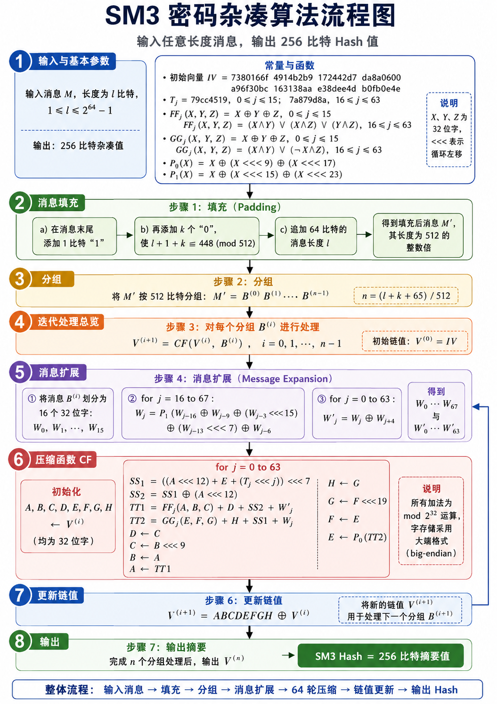

算法介绍-SM3
SM3 算法介绍

SM3 是一个迭代型 Hash 算法：它先把任意长度消息整理成若干个 512 比特分组，然后每次取一个分组，与当前 256 比特链值一起送入压缩函数。压缩函数内部会先做消息扩展，再进行 64 轮寄存器更新，最后把本轮结果和输入链值异或，得到新的链值。所有分组处理完成后，最后一个链值就是 256 比特杂凑值。
1. 输入与基本参数
SM3 的输入是一段消息 \(M\)，消息长度记为 \(l\) 比特，要求满足：
算法最终输出固定长度的 Hash 值，长度为 256 比特。也就是说，无论原始消息有多长，最终摘要长度都固定为 256 比特。
SM3 的初始状态由初始向量 \(IV\) 给出：
可以看到，初始向量一共有 8 个 32 位字，总长度正好是：
所以在算法里，链值 \(V^{(i)}\) 始终是 256 比特。它可以拆成 8 个 32 位寄存器：
图中还列出了常量 \(T_j\)。SM3 一共有 64 轮压缩，每一轮使用一个常量：
这里的 \(j\) 表示轮数编号。前 16 轮使用一个常量，后 48 轮使用另一个常量。这样做的作用是让不同轮次的计算具有不同扰动，减少轮函数结构过于重复带来的风险。
SM3 还定义了两个布尔函数 \(FF_j\) 和 \(GG_j\)。它们的输入都是三个 32 位字 \(X,Y,Z\)，输出也是一个 32 位字。
前 16 轮中：
这里用的是按位异或，结构相对直接，主要用于初始扩散。
从第 16 轮到第 63 轮，函数变成：
第一个函数常被称为多数函数。对每一位来说，它会看 \(X,Y,Z\) 这一位中有多少个 1，只要多数为 1，输出就是 1。第二个函数带有条件选择性质：当 \(X\) 的某一位为 1 时，更倾向于选择 \(Y\) 对应位；当 \(X\) 的某一位为 0 时，更倾向于选择 \(Z\) 对应位。
图中还有两个置换函数：
其中 \(\lll\) 表示循环左移。它和普通左移不同，移出去的高位会从低位补回来。置换函数的作用是把一个 32 位字内部的比特位置打散，让输入中的局部变化传播到更多位置。
2. 消息填充
SM3 的压缩函数每次只能处理 512 比特数据。原始消息长度通常不会刚好是 512 的整数倍，所以在进入压缩之前，需要先进行填充。
假设原始消息长度为 \(l\) 比特。填充分三步进行。
第一步，在消息末尾添加一个比特 \(1\)。
第二步，继续添加 \(k\) 个比特 \(0\)，使得：
这一步的意思是，填充完 \(1\) 和若干个 \(0\) 后，消息长度在模 512 意义下等于 448。
第三步，再追加 64 比特长度字段，用二进制表示原始消息长度 \(l\)。
于是最终长度满足：
就是说，填充后的消息长度一定是 512 的整数倍。
这里需要注意，最后追加的 64 比特表示的是原始消息长度 \(l\)，不是填充后消息长度。这个长度字段参与后续压缩，可以让不同长度、不同内容的消息在结构上区分开来。
举个简化例子。若原始消息长度为 24 比特，先添加一个 \(1\)，此时长度变成 25 比特。接着添加 \(k\) 个 \(0\)，使长度达到模 512 等于 448。最后再追加 64 比特长度字段，整个消息就变成 512 比特。
3. 分组
填充完成后，得到新的消息 \(M'\)。由于它的长度已经是 512 的整数倍，所以可以按 512 比特划分为若干组：
其中每个 \(B^{(i)}\) 都是一个 512 比特分组。
分组数为：
这里的 \(65\) 来自两部分：前面添加的 1 比特，再加上最后的 64 比特长度字段。因此填充后总长度是：
分组这一步本身只是格式整理，但它决定了后面迭代压缩的次数。每一个 512 比特分组都会被送入压缩函数处理一次。
4. 迭代处理总览
SM3 使用 Merkle-Damgård 类型的迭代结构。它不是一次性处理完整消息，而是逐组处理。
初始链值为：
对于每一个消息分组 \(B^{(i)}\)，计算：
其中 \(CF\) 是压缩函数，下面会单独介绍
这个式子说明，每一轮分组处理都依赖两个输入：一个是当前链值 \(V^{(i)}\)，另一个是当前消息分组 \(B^{(i)}\)。输出的新链值 \(V^{(i+1)}\) 会继续参与下一个分组的压缩。
因此，消息分组之间不是孤立处理的。前一个分组的压缩结果会影响后一个分组的计算过程。这种链式结构使得最终 Hash 值和所有消息分组都有关。
5. 消息扩展
在压缩函数正式开始 64 轮运算前，SM3 会先对当前 512 比特分组 \(B^{(i)}\) 做消息扩展。
一个 512 比特分组可以划分成 16 个 32 位字：
因为：
但压缩函数有 64 轮，如果每轮都只直接使用原始 16 个字，输入消息参与计算的方式会相对有限。所以 SM3 会把这 16 个字扩展为 68 个字：
扩展规则为：
其中：
这个公式的含义是：新的 \(W_j\) 由多个历史位置的字经过异或、循环左移和置换函数 \(P_1\) 混合得到。这样可以把原始分组中的比特传播到更多轮次中。
随后，算法继续生成 64 个字（这也就是为什么刚刚要扩展到68字）：
其中：
最终压缩函数会用到两组扩展消息：
其中 \(W_j\) 和 \(W'_j\) 会分别进入压缩函数中的 \(TT2\) 和 \(TT1\) 计算。这样做使每一轮压缩都能获得不同的消息输入，并且这些输入已经包含了原始消息分组中多个位置的信息。
6. 压缩函数 CF
压缩函数是 SM3 的核心。它接收当前链值 \(V^{(i)}\) 和当前消息分组 \(B^{(i)}\)，输出新的链值 \(V^{(i+1)}\)。
首先，把 256 比特链值拆成 8 个 32 位寄存器：
然后执行 64 轮循环。每一轮编号为 \(j\)，范围是：
每一轮先计算两个中间量 \(SS1\) 和 \(SS2\)：
这里的 \(SS1\) 把当前寄存器 \(A\)、寄存器 \(E\)、轮常量 \(T_j\) 结合起来，再做循环左移。由于 \(T_j\) 还会按照轮数 \(j\) 左移，所以每一轮引入的常量影响位置也会发生变化。
接着计算两个更重要的中间变量 \(TT1\) 和 \(TT2\)：
这里可以看到，SM3 的压缩状态实际上分成了两条相互关联的计算线索。
-
第一条线索以 \(A,B,C,D\) 为主要寄存器，经过 \(FF_j\)、\(D\)、\(SS2\)、\(W'_j\) 得到 \(TT1\)。
-
第二条线索以 \(E,F,G,H\) 为主要寄存器，经过 \(GG_j\)、\(H\)、\(SS1\)、\(W_j\) 得到 \(TT2\)。
这两条线索又通过 \(SS1\)、\(SS2\)、消息字和后续寄存器更新产生交叉影响。
然后更新 8 个寄存器：
这组更新有两个特点。
-
首先，寄存器不是简单平移，其中 \(C\) 来自 \(B\lll 9\)，\(G\) 来自 \(F\lll 19\)，\(E\) 来自 \(P_0(TT2)\)。这些循环左移和置换会改变比特位置，让上一轮状态在下一轮中重新分布。
-
其次，\(A\) 和 \(E\) 分别由 \(TT1\) 和 \(P_0(TT2)\) 更新。也就是说，每一轮真正引入新计算结果的位置主要是 \(A\) 和 \(E\)，然后在后续轮次中逐渐传播到其他寄存器。
7. 更新链值
64 轮压缩完成后，寄存器 \(A,B,C,D,E,F,G,H\) 合起来形成一个 256 比特结果：
SM3 把它和输入链值 \(V^{(i)}\) 做异或：
这个操作也叫前馈结构。它让压缩输出和压缩前的链值再次结合，使当前分组的输出同时保留对输入链值的依赖。
之后，新的链值 \(V^{(i+1)}\) 会继续参与下一个消息分组 \(B^{(i+1)}\) 的处理。图中右侧的回箭头表达的就是这一点：每处理完一个分组，就更新链值，然后进入下一组。
如果当前已经是最后一个分组，那么更新后的链值就进入最终输出阶段。
8. 输出
当所有 \(n\) 个分组都处理完成后，算法得到最后的链值：
这个 \(V^{(n)}\) 就是 SM3 的 Hash 结果。
由于每个链值始终是 8 个 32 位字，所以输出长度为：
最终可以写成：
图中底部的整体流程可以串起来理解：
9. 算法实现
# -*- coding: utf-8 -*-
"""
SM3 密码杂凑算法 Python 实现
输入：bytes 类型消息
输出：64 位十六进制字符串，即 256 比特 Hash 值
"""
# 初始向量 IV，8 个 32 位字
IV = [
0x7380166F,
0x4914B2B9,
0x172442D7,
0xDA8A0600,
0xA96F30BC,
0x163138AA,
0xE38DEE4D,
0xB0FB0E4E,
]
def rotate_left(x: int, n: int) -> int:
"""
32 位循环左移
x：待移位的 32 位整数
n：循环左移位数
"""
n = n % 32
return ((x << n) & 0xFFFFFFFF) | (x >> (32 - n))
def p0(x: int) -> int:
"""
置换函数 P0
P0(X) = X ⊕ (X <<< 9) ⊕ (X <<< 17)
"""
return x ^ rotate_left(x, 9) ^ rotate_left(x, 17)
def p1(x: int) -> int:
"""
置换函数 P1
P1(X) = X ⊕ (X <<< 15) ⊕ (X <<< 23)
"""
return x ^ rotate_left(x, 15) ^ rotate_left(x, 23)
def ff(x: int, y: int, z: int, j: int) -> int:
"""
布尔函数 FF_j
0 <= j <= 15:
FF_j(X,Y,Z) = X ⊕ Y ⊕ Z
16 <= j <= 63:
FF_j(X,Y,Z) = (X∧Y) ∨ (X∧Z) ∨ (Y∧Z)
"""
if 0 <= j <= 15:
return x ^ y ^ z
return (x & y) | (x & z) | (y & z)
def gg(x: int, y: int, z: int, j: int) -> int:
"""
布尔函数 GG_j
0 <= j <= 15:
GG_j(X,Y,Z) = X ⊕ Y ⊕ Z
16 <= j <= 63:
GG_j(X,Y,Z) = (X∧Y) ∨ ((¬X)∧Z)
"""
if 0 <= j <= 15:
return x ^ y ^ z
return (x & y) | ((~x & 0xFFFFFFFF) & z)
def t(j: int) -> int:
"""
常量 T_j
0 <= j <= 15:
T_j = 0x79CC4519
16 <= j <= 63:
T_j = 0x7A879D8A
"""
if 0 <= j <= 15:
return 0x79CC4519
return 0x7A879D8A
def padding(message: bytes) -> bytes:
"""
消息填充
原始消息长度为 l 比特。
填充步骤：
1. 在消息末尾添加 1 比特；
2. 添加 k 个 0，使 l + 1 + k ≡ 448 (mod 512)；
3. 追加 64 比特的原始消息长度 l。
"""
bit_len = len(message) * 8
# 添加 1 比特。按字节表示时，就是追加 10000000，即 0x80
padded = message + b"\x80"
# 继续追加 0x00，直到当前长度模 64 字节等于 56 字节
# 56 字节 = 448 比特，剩下 8 字节用于保存原始长度
while (len(padded) % 64) != 56:
padded += b"\x00"
# 追加 64 比特原始消息长度，大端格式
padded += bit_len.to_bytes(8, byteorder="big")
return padded
def message_extension(block: bytes):
"""
消息扩展
输入：
block：512 比特分组，即 64 字节
输出：
W ：W_0 到 W_67，共 68 个 32 位字
W1：W'_0 到 W'_63，共 64 个 32 位字
"""
W = []
# 将 512 比特分组划分为 16 个 32 位字
for i in range(16):
word = int.from_bytes(block[i * 4:(i + 1) * 4], byteorder="big")
W.append(word)
# 由 W_0...W_15 扩展出 W_16...W_67
for j in range(16, 68):
value = (
p1(W[j - 16] ^ W[j - 9] ^ rotate_left(W[j - 3], 15))
^ rotate_left(W[j - 13], 7)
^ W[j - 6]
)
W.append(value & 0xFFFFFFFF)
# 生成 W'_0...W'_63
W1 = []
for j in range(64):
W1.append((W[j] ^ W[j + 4]) & 0xFFFFFFFF)
return W, W1
def compression(v_i, block: bytes):
"""
压缩函数 CF
输入：
v_i：当前链值 V^(i)，包含 8 个 32 位字
block：当前 512 比特消息分组 B^(i)
输出：
新链值 V^(i+1)
"""
W, W1 = message_extension(block)
A, B, C, D, E, F, G, H = v_i
for j in range(64):
SS1 = rotate_left(
(rotate_left(A, 12) + E + rotate_left(t(j), j)) & 0xFFFFFFFF,
7
)
SS2 = SS1 ^ rotate_left(A, 12)
TT1 = (ff(A, B, C, j) + D + SS2 + W1[j]) & 0xFFFFFFFF
TT2 = (gg(E, F, G, j) + H + SS1 + W[j]) & 0xFFFFFFFF
D = C
C = rotate_left(B, 9)
B = A
A = TT1
H = G
G = rotate_left(F, 19)
F = E
E = p0(TT2)
A &= 0xFFFFFFFF
B &= 0xFFFFFFFF
C &= 0xFFFFFFFF
D &= 0xFFFFFFFF
E &= 0xFFFFFFFF
F &= 0xFFFFFFFF
G &= 0xFFFFFFFF
H &= 0xFFFFFFFF
result = [
A ^ v_i[0],
B ^ v_i[1],
C ^ v_i[2],
D ^ v_i[3],
E ^ v_i[4],
F ^ v_i[5],
G ^ v_i[6],
H ^ v_i[7],
]
return [x & 0xFFFFFFFF for x in result]
def sm3_hash(message: bytes) -> str:
"""
SM3 主函数
输入：
message：bytes 类型消息
输出：
64 个十六进制字符组成的字符串
"""
padded_message = padding(message)
# 初始链值 V^(0) = IV
v = IV[:]
# 按 512 比特，也就是 64 字节分组处理
for i in range(0, len(padded_message), 64):
block = padded_message[i:i + 64]
v = compression(v, block)
# 8 个 32 位字拼接成 256 比特摘要
return "".join(f"{word:08x}" for word in v)
if __name__ == "__main__":
# 测试样例 1
msg1 = b"abc"
digest1 = sm3_hash(msg1)
print("message:", msg1)
print("SM3:", digest1)
# 标准测试结果应为：
# 66c7f0f462eeedd9d1f2d46bdc10e4e2
# 4167c4875cf2f7a2297da02b8f4ba8e0
# 测试样例 2
msg2 = b"abcd" * 16
digest2 = sm3_hash(msg2)
print("message:", msg2)
print("SM3:", digest2)
# 标准测试结果应为：
# debe9ff92275b8a138604889c18e5a4d
# 6fdb70e5387e5765293dcba39c0c5732